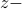

Philipp Walk (Caltech)Nov 27, 2017. Title and AbstractBlind Deconvolution Methods for Short Message Communications Blind deconvolution is a challenging problem in signal processing having a long history. We will present new deconvolution algorithms which perform stable and efficient without using any stochastic assumptions on the signals and only demand a coprime zero structure. For the next generation of wireless networks such blind deconvolution methods are crucial to provide a sporadic short message communication over fast fading and noncoherent wireless channels. Herein we introduce a Binary Modulation On Conjugated Zeros (BMOCZ) to communicate reliable over an unknown finite impulse response channel by using a low complexity decoder at the receiver, giving by a Direct Zero Testing (DiZeT) on the magnitude of the received transform. Moreover, we can significantly improve the bit error performance by introducing a weight for the DiZeT decoder, which we will analyze in more detail for BMOCZ by using Huffman signals. Furthermore, our signaling scheme is applicable to multiple antenna scenarios and is demonstrated to exploit the antenna diversity. Due to the low complexity of the decoder, our scheme looks promising for real-time applications as needed in many mobile and machine type devices. BioPhilipp Walk received his PhD in the Electrical Engineering Department from the Technical University Munich, Germany, in 2014 under the supervision of Holger Boche, where he continued as a postdoctoral researcher until 2015. In September 2015 he received a DFG postdoctoral fellowship and joined the group of Babak Hassibi in the Electrical Engineering Department at Caltech, Pasadena. From February to May 2016 he received a fellowship for attending the Hausdorff trimester program “Mathematics of Signal Processing” in Bonn, Germany. Walk's research interests are in wireless communication, blind deconvolution, phase retrieval, and physical layer security |